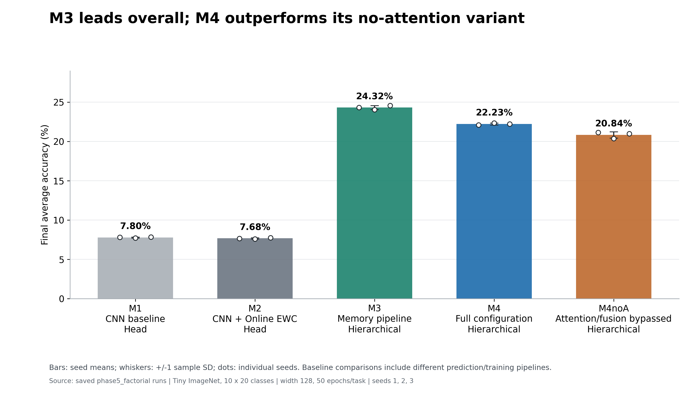
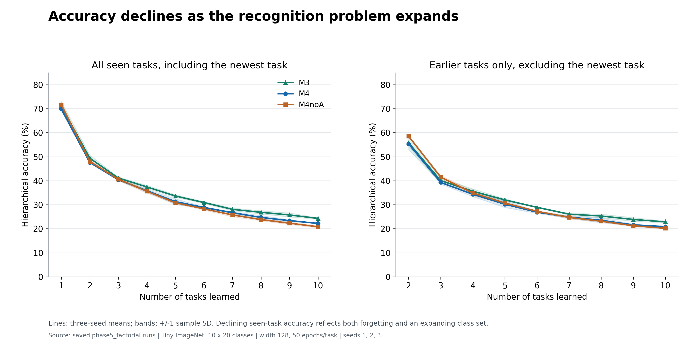
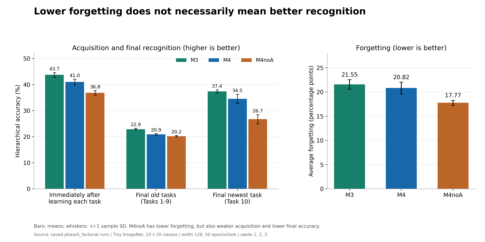
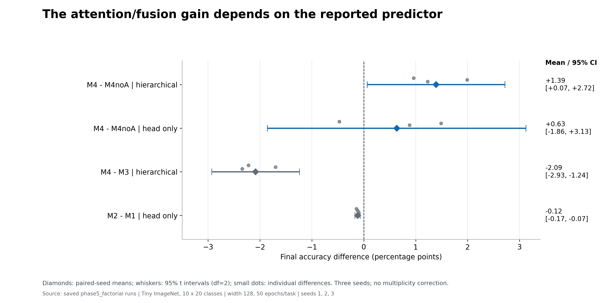
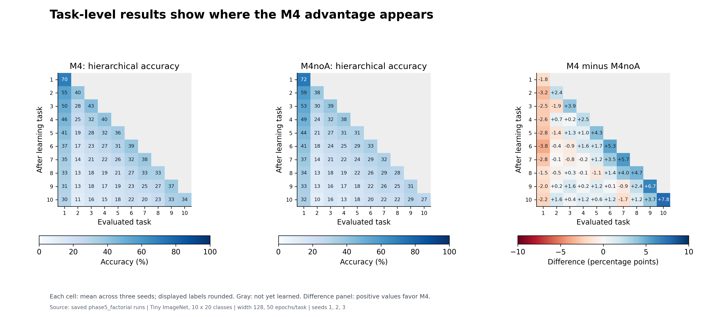
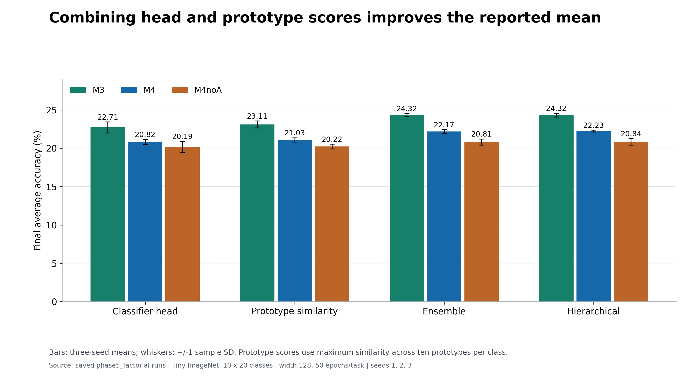

MAVIS: understanding the codebase and presenting it
Source-grounded study guide • inspected 28 October 2026 • current Python implementation and saved factorial results
MAVIS is a visual class-incremental learning research system. It learns new image classes in sequential tasks and tries to retain earlier knowledge through external feature memory, attention, representation distillation, synthetic feature replay, and Online Elastic Weight Consolidation (EWC).
View the six result plots and presentation observations.
Presenting M4 and M4noA? Open the focused presentation and revision pack.
Presentation plots and important observations
Generated 29 October 2026 from the 15 saved phase5_factorial runs. No retraining. Three optimization seeds, one class-order setup; width 128, ten tasks, fifty epochs per task.
Each figure is available as a high-resolution PNG for slides and an editable vector SVG. Bars and line bands show sample standard deviation unless the figure explicitly specifies a paired 95% confidence interval. The complete numerical evidence and source-file hashes are in plot_data.json; reproduce with plot_presentation.py.






M4 and M4noA: presentation and revision pack
Start here for a presentation focused on these two variants. The sections below give an analogy, the exact technical distinction, equations, results, a ten-minute speaking plan and viva answers. The original whole-project reference follows this pack. This addition documents the restored implementation and existing results; it does not modify models or run training.
Plain-English explanation · What changes · Technical walkthrough · Results and interpretation · Speaking plan · Viva preparation
1. The explanation anyone should understand
Imagine a student learning twenty new categories of objects each week. In the first week the student learns one set; the next week brings a different set. An exam eventually mixes everything learned so far. A neural network can become good at the latest set while losing its ability to recognize earlier sets. This is the problem of catastrophic forgetting.
MAVIS gives the student several forms of help. A prototype memory is a notebook of representative descriptions. Attention chooses relevant notes for the object currently being viewed. A gate decides how much to combine those notes with the current observation. Replay provides practice using synthetic feature descriptions. Distillation asks earlier versions of the student to keep the new representation consistent. Online EWC discourages changes to parameters estimated to be important for earlier learning.
M4 uses all of these mechanisms. M4noA keeps the same broader memory-learning system but bypasses attention and gated fusion. Its classifier receives the encoder feature directly. It still practices from prototypes, preserves representations, uses Online EWC, refreshes memory, and consults prototypes through the final prediction procedure. Therefore, M4noA does not mean “no memory.”
The notebook analogy has a practical qualification: after each task, this implementation reopens earlier training images to update the notes. It cannot be described as a strict learning stream in which all old images have been discarded.
2. Exactly what stays and what changes
| Component | M4 | M4noA | Meaning |
|---|---|---|---|
| CNN encoder and cosine classifier | Yes | Yes | Extract features and score classes. |
| Prototype memory and class variances | Yes | Yes | Store representative feature vectors and feature spread. |
| Attention and gate on live images | Active | Bypassed | M4 enriches the feature; M4noA passes it directly to the classifier. |
| Attention and gate on replay features | Active, without replay gradients through these modules | Bypassed; features normalized | The replay transformation changes too. |
| Attention reconstruction loss | Active when past prototypes exist | Disabled | Only M4 trains retrieval to reconstruct prototype directions. |
| Feature/spatial distillation; alignment and repulsion | Yes | Yes | Preserve representations and encourage class separation. |
| Feature replay and balanced classifier finetuning | Yes | Yes | Practice across seen classes and recalibrate the head. |
| Online EWC | Yes | Yes | Penalize movement of important parameters. |
| Historical-image memory refresh | Yes | Yes | Rebuild old prototypes in the current encoder's feature space. |
| Prototype, ensemble and hierarchical prediction | Available | Available | Memory still contributes to M4noA's reported final prediction. |
Ablation means a controlled variant used to examine a component's contribution. Here, the switch changes live fusion, replay fusion and reconstruction training together. Say “attention/fusion configuration ablation,” rather than claiming that the experiment isolates only an inference-time attention operation. The bypassed modules remain instantiated, so this implementation does not establish a smaller stored model or a measured speedup.
3. Follow one image through the system
For both variants, a separate prototype-scoring branch uses the encoder feature. The reported hierarchical predictor combines head and prototype information. These two flow lines describe the classifier branch, not the complete evaluation procedure.
- Encoder: a wide ResNet-18-style CNN with squeeze-and-excitation blocks, GroupNorm and final LayerNorm maps a 3 × 64 × 64 image to a 512-dimensional vector z. Residual connections support deep feature learning; SE blocks reweight channels; GroupNorm normalizes groups within each example. A feature vector is a learned numerical description, not a stored image.
- Memory: ten clustered prototypes per class describe different feature patterns within that class. At 200 classes there are 2,000 vectors of dimension 512. One diagonal variance vector per class estimates coordinate-wise feature spread. During training, completed-task memory is supplemented by current-task running prototypes; evaluation uses populated committed memory.
- Attention in M4: the current feature supplies the query; prototype memory supplies keys and values. Four heads compute learned similarity-weighted combinations. Each head operates on 128 projected dimensions. The attention is over feature prototypes, not image pixels or image patches.
- Fusion in M4: a learned 512-component gate combines the current and retrieved features. Each coordinate can use a different mixture. M4noA bypasses this operation.
- Classifier: normalized class weights are compared with the feature direction using cosine similarity. A scale of 24 converts similarities to logits. A 0.20 additive cosine margin is used with labels during training. Evaluation restricts predictions to classes already seen.
Q = zW_Q, K = MW_K, V = MW_V
Head(Q,K,V) = softmax(QKᵀ / (τ√d_h))V, with τ = 0.5 and d_h = 128
r = normalized output of the combined attention heads
g = 0.05 + 0.90 sigmoid(W_g[z;r] + b_g)
M4: h = g ⊙ z + (1 − g) ⊙ r
M4noA: h = z
Here, M is the memory bank, r is the retrieved vector, and ⊙ means coordinate-wise multiplication. “Normalized output” above refers to the attention output's LayerNorm; it does not imply unit L2 norm. The gate starts at 0.5 and is bounded between 0.05 and 0.95. It is a mixing coefficient, not a calibrated probability that memory is correct.
4. What happens during training and after each task?
The training objective has complementary purposes. Classification learns the current classes. Feature distillation uses frozen first-task and previous-task encoders to constrain representation drift. Spatial distillation constrains pooled intermediate feature maps. Prototype alignment brings a sample toward its class representation; repulsion discourages similarity to competing historical prototypes. Reconstruction trains attention to recover stored prototype directions. Replay trains the classifier on synthetic feature samples. EWC discourages movement of important parameters.
+ 2L_repel + L_reconstruct + 2L_replay + L_EWC
These are current default coefficients; sₑ ramps the distillation weight at the start of a task. Terms requiring older knowledge are inactive when that knowledge does not yet exist. M4noA removes the reconstruction term and bypasses fusion; it does not remove the rest of this objective.
Replay is in feature space: sample a prototype, add Gaussian noise scaled by the class's diagonal standard deviations, then normalize. Conceptually, u = normalize(p + 0.5σ ⊙ ε), where ε is standard Gaussian noise. This produces a synthetic feature description, not a generated picture. In this implementation, replay fusion runs without gradient tracking and replay loss updates the classifier rather than the encoder.
- Train on the current task, updating running prototypes and applying the available losses.
- Build committed prototypes and variances from current-task training images.
- Revisit all earlier training tasks and rebuild their prototypes using the current encoder.
- After tasks beyond the first, finetune the classifier using balanced prototype replay with the encoder and retrieval path frozen; the default is 25 epochs and five draws per prototype.
- Save the first-task encoder once, and update the frozen previous-task encoder.
- Update Online EWC importance and save the latest parameter anchor.
- Evaluate all seen classes and save the results.
Refreshing prototypes addresses representation drift: if the encoder changes, an old stored vector may no longer describe its class in the new coordinate system. Refresh uses old training images, not validation images. It is historical data access, even though gradient replay itself uses synthetic features.
5. Online EWC: what it means and when it starts
Both M4 and M4noA use Online Elastic Weight Consolidation. It maintains one accumulated diagonal importance estimate and one latest parameter snapshot, rather than a growing list of separate task penalties. “Online” describes this sequential state update; it does not mean internet access.
L_EWC = (λ/2) Σᵢ F_running,i(θᵢ − θ*ᵢ)²
Current defaults: γ = 0.88; λ = 5000; importance sample target = 2000
θ is the current parameter vector, θ* is the saved anchor, and F estimates parameter importance. Greater importance or larger movement produces a larger penalty. It is a soft constraint, not a complete freeze.
Task 1: no earlier anchor exists, so no prior-task EWC penalty is applied. At the end of Task 1, estimate importance and save the anchor. Task 2 onward: apply the penalty during training, then consolidate the importance and replace the anchor after each task. At the exact saved anchor the penalty is zero; it grows as important parameters move.
Implementation precision for technical questions: compute_fisher averages squared gradients of batch-mean losses. Describe this as a diagonal Fisher-style approximation; it is not an exact per-example Fisher computation. M2 also uses Online EWC, while M3 omits EWC.
6. Prediction is more than the classifier head
The head predictor uses cosine-classifier scores. The prototype predictor compares the raw encoder direction with each class's ten prototypes and takes that class's maximum similarity. Although saved outputs call this “NCM,” it is a multi-prototype maximum-similarity rule rather than one mean per class. The ensemble blends head and prototype probabilities with age-dependent weights that favor prototypes for older classes. The hierarchical predictor combines task-level class probability mass with prototype affinity, then retains the ensemble's within-task class proportions.
The correct task label is not supplied at test time. Task grouping comes from the known training partition, and task preference is inferred from the scores. This prediction machinery is retained in M4noA, explaining why bypassing attention does not remove every use of memory.
7. Results you can put directly on a slide
Setup: Tiny ImageNet, 200 classes, ten sequential tasks of twenty classes, 64 × 64 images, encoder width 128, fifty epochs per task, three optimization seeds (1, 2, 3), one fixed class-order setup. The main final accuracy uses the hierarchical predictor across all seen classes. Uncertainty below is sample standard deviation across seeds, not a confidence interval.
| Metric | M4 | M4noA | Interpretation |
|---|---|---|---|
| Final hierarchical accuracy | 22.23% ± 0.13 | 20.84% ± 0.41 | M4 is ahead by 1.39 percentage points. |
| Average incremental accuracy | 35.10% | 34.78% | Average of seen-task mean accuracy across training stages. |
| Average forgetting | 20.82 points | 17.77 points | Drop from each old task's best earlier accuracy to its final accuracy. |
| Mean learning accuracy | 40.97% | 36.84% | Mean task accuracy immediately after that task is learned. |
| Final old-task mean accuracy | 20.87% | 20.19% | Average final accuracy on Tasks 1–9. |
| Final newest-task accuracy | 34.50% | 26.70% | Accuracy on Task 10 after learning Task 10. |
| Head-only final accuracy | 20.82% ± 0.33 | 20.19% ± 0.73 | Do not confuse this with the headline hierarchical result. |
How to explain the forgetting result: a learner that initially scores 60 and later scores 40 loses 20 points; a learner that initially scores 40 and later scores 30 loses only 10. The second learner forgets less by this metric but finishes worse. These are illustrative numbers. In the actual experiment, M4noA has lower forgetting but also lower acquisition and final accuracy, so retention and learning must be discussed together.
The paired-seed 95% t interval for the hierarchical M4−M4noA difference is +0.07 to +2.72 points. This is modest evidence from three seeds, a fixed class order and an unadjusted contrast. The head-only difference is +0.63 points with interval −1.86 to +3.13, so the same clear conclusion does not follow for head-only prediction.
Context that must remain on the slide or in your explanation: M3, the memory pipeline without EWC, reaches 24.32% ± 0.26 and is the best final-accuracy variant in this study. M4 is the full combined configuration, not the highest-scoring configuration. Reduced plasticity from additional regularization is a possible explanation for its deficit to M3, but the current experiment does not establish that mechanism.
Defensible conclusion: “Under the tested Online EWC configuration, enabling the attention/fusion configuration improves hierarchical final accuracy over M4noA. However, removing EWC from the full memory pipeline gives the highest final accuracy in the saved study.”
Evidence: original factorial JSON files, main results, retention/acquisition breakdown, predictor breakdown and paired comparisons. Existing figures: final summary, retention curves, predictors, task accuracy matrices. Keep predictor labels and the experimental scope visible when reusing a figure.


8. A ten-minute presentation plan with speaking notes
- Problem — 45 seconds. “We train on new classes sequentially, but test on everything seen so far. Updating shared weights can damage earlier recognition.” Draw three successive groups of classes followed by a mixed test.
- Experiment — 45 seconds. “Our saved experiment uses 200 Tiny ImageNet classes in ten tasks, with three optimization seeds. At inference, the true task identity is unavailable.”
- Memory intuition — 60 seconds. “The encoder converts an image into 512 features. Ten representative vectors per class form a notebook of different appearances.” Explain prototypes using an illustrative class without claiming that each centroid has an interpretable semantic label.
- M4 architecture — 75 seconds. Draw encoder → attention over memory → gate → cosine head, plus a separate prototype prediction branch. “Attention selects relevant feature information; the gate mixes it with the current observation.”
- M4noA ablation — 60 seconds. Bypass attention and the gate on the drawing. “Memory, replay, distillation, refresh and Online EWC remain. Replay fusion and attention reconstruction change with this switch too.”
- Training and Online EWC — 90 seconds. Group losses by purpose instead of reading eight names. “The first task establishes the EWC anchor. From the second task, important parameters are penalized for moving.” Show the single EWC equation and define every symbol.
- Task boundary and prediction — 60 seconds. “After training, we rebuild current and historical prototypes, rebalance the classifier, update teacher and EWC states, and evaluate. Final prediction combines classifier and prototype evidence.” State historical-image access explicitly.
- Results — 75 seconds. “M4 reaches 22.23% and M4noA 20.84%, a 1.39-point gain. M4noA forgets less by the drop metric but also learns less strongly. M3 is best overall at 24.32%.” Use one result chart and three annotated numbers.
- Contribution and limits — 60 seconds. “We study a shared prototype-memory pipeline with retrieval, replay and prediction, alongside parameter regularization. The evidence is limited to this dataset, class order and three seeds; historical-data access must be accounted for.”
- Closing — 30 seconds. “The attention/fusion configuration helps within M4, while extra regularization is not automatically beneficial. Future work should separate the ablation effects, test more orders and evaluate without historical refresh.”
If presenting as a group, split at conceptual boundaries: problem/memory; M4 and M4noA architecture; training/EWC; evaluation/conclusion. Every speaker should still know the three headline accuracies and what remains active in M4noA.
9. Faculty questions and answers to rehearse
Why is M4noA needed?
It tests the contribution of the attention/fusion configuration within the broader M4 pipeline. Without it, a gain over a plain CNN could come from replay, distillation, historical refresh, prediction changes or other differences.
Is attention the same as memory?
No. Memory stores vectors; attention is one way to retrieve and transform them. Memory can still support replay and prototype prediction when attention is bypassed.
Is M4noA identical to M2?
No. Both use Online EWC, but M4noA retains the prototype-memory pipeline, feature replay, distillation, refresh, classifier recalibration and memory-based prediction. M2 is the baseline CNN with Online EWC.
Does noA mean that attention parameters were deleted?
No. The switch bypasses the instantiated attention and gate modules. Stored parameter count is therefore not evidence of a smaller model, and a runtime advantage needs measurement.
Why use ten prototypes?
A class can occupy several regions in feature space. Multiple representatives can cover variation better than one. Ten is the chosen setting; this study does not demonstrate it is optimal.
Why use a gate rather than always averaging?
A learned coordinate-wise mixture can adapt the balance between the current and retrieved features. That is the design motivation; superiority over fixed averaging requires its own ablation.
What does EWC add if distillation already exists?
Distillation constrains the outputs or representations produced by the model; EWC constrains movement of its parameters. They operate at different levels, but can impose overlapping stability pressure. Their combination is not guaranteed to improve accuracy.
Why does M3 outperform M4?
The measurements show that adding EWC at the tested strength lowers final accuracy. Reduced plasticity is a plausible explanation, but confirming it needs controlled strength sweeps and acquisition/retention analysis.
Does M4 eliminate forgetting?
No. Its reported average forgetting is 20.82 percentage points. It retains some earlier recognition while continuing to learn; complete preservation is not demonstrated.
Why is accuracy only around 22%?
This is final recognition across 200 classes after sequential learning, not a two-class task or current-task training accuracy. The score still leaves substantial room for improvement, and cannot establish state of the art without matched external comparisons.
Is this strictly exemplar-free?
No. Synthetic replay uses features, but task-boundary refresh accesses earlier real training images. Prototype-only gradient replay does not imply prototype-only historical data access.
How much memory is required?
At 200 classes, ten 512-dimensional FP32 prototypes per class take about 3.91 MiB; one variance vector per class adds about 0.39 MiB. Roughly 4.30 MiB describes those buffers only. Model weights, teacher encoders, EWC state, optimizer, activations and historical image access are additional costs.
What is the actual novelty?
Present the contribution as the system integration and empirical investigation of a shared multi-prototype memory for retrieval, replay and prediction, with representation and parameter stability mechanisms. Do not claim invention of attention, prototypes or EWC, or global novelty of the combination without a literature review.
How strong is the evidence?
There are three optimization seeds with one fixed class-order setup. The hierarchical M4−M4noA contrast is positive, but the sample is small and the ablation changes multiple coupled operations. The saved runs do not include a complete immutable source/configuration record.
What would you test next?
Separate live attention, replay fusion and reconstruction ablations; compare refreshed versus frozen historical memory; match training and data access across baselines; sweep EWC strength; repeat additional class orders and datasets. These are proposed experiments, not completed results.
Can we present without retraining?
Yes. Present the saved experiment, label it clearly, and use existing plots and JSON records. Reading source and explaining results does not require training a new model.
10. A short closing speech
“M4 and M4noA investigate how a visual model can learn new classes while preserving earlier knowledge. Both use prototype memory, feature replay, distillation and Online EWC. M4 additionally retrieves prototype information through attention and combines it with the image feature through a learned gate. M4noA bypasses that path, but it still uses memory in training and prediction. In our saved three-seed experiment, M4 reaches 22.23% final hierarchical accuracy compared with 20.84% for M4noA. The no-attention variant has lower measured forgetting, but also weaker learning and lower final accuracy. M3, which removes EWC from the full memory pipeline, performs best at 24.32%. Our result therefore supports a contribution from the attention/fusion configuration, while showing that adding stability mechanisms does not automatically improve the final model.”
Source checkpoints for technical follow-up: forward and replay fusion; attention implementation; prototype memory; losses, refresh and prediction; Online EWC; metric definitions; current defaults. Prefer executable paths over stale comments. Current code explains the implementation, while saved results supply measurements.
1. What problem does the project solve?
Ordinary image classification learns all classes together. Here, Task 1 introduces 20 classes, Task 2 introduces another 20, and so on. Updating shared CNN weights for a new task can destroy features useful for old classes: catastrophic forgetting. Stability preserves old knowledge; plasticity allows new learning. Every regularizer in MAVIS negotiates this tradeoff.
The intended dataset is Tiny ImageNet: 200 RGB classes, 64 × 64 images, conventionally 500 training and 50 validation images per class. The default experiment therefore has 10 tasks × 20 classes, about 10,000 training images and 1,000 validation images per task. Class membership follows a seeded shuffle. Evaluation predicts among all classes seen so far, without supplying the true task identity.
| Cell | Implementation | Purpose |
|---|---|---|
| M1 | BaselineCNN + ContinualTrainer, EWC off | Sequential fine-tuning reference |
| M2 | Same baseline + Online EWC | Parameter protection alone |
| M3 | MAVIS + MAVISTrainer, EWC off | Full memory training pipeline without EWC |
| M4 | MAVIS + MAVISTrainer, EWC on | Combined pipeline |
| M4noA | M4 with attention and fusion bypassed | Joint attention/fusion ablation: live fusion, replay fusion and reconstruction change; replay, distillation, refresh and prototype prediction remain |
M3 is much more than “CNN plus attention.” M1→M3 changes multiple losses, calibration, historical data access, and inference. That comparison measures a system-level improvement, not an isolated attention effect.
2. How the project is organized
| Path | Responsibility and what to understand |
|---|---|
main.py | CLI entry point. Loads configuration, applies flags, seeds randomness, builds data/model/trainer, handles MAVIS resume, loops through tasks, exports JSON results. Commands include setup, verify, visualize, config, train_baseline, train_ewc, train_mavis. |
config.py and configs/ | Dataclasses hold defaults; YAML overrides sections. task_definitions.json records task membership. Unknown YAML fields are filtered out. CLI overrides can further change the run. |
data/task_generator.py | Discovers sorted WordNet class folders, shuffles class order with a seed, partitions classes into tasks. get_task uses one-based task numbers. |
data/tiny_imagenet.py | TinyImageNetTaskDataset returns images with task-local labels; TinyImageNetLoader supplies loaders, caches datasets, and uses decoded uint8 NumPy disk caches with memory mapping where possible. Workers are forced to zero. |
data/augmentation.py, download.py | Training/evaluation transforms; dataset acquisition and verification. |
models/encoder.py | SEBlock, residual BasicBlock, CNNEncoder: the common from-scratch visual backbone. |
models/classifier.py | CosineLinear and IncrementalClassifier. Normalized features and weights, fixed logit scale, optional training margin. |
models/baseline.py | Encoder → classifier, used by M1 and M2. |
models/memory.py | K-means centroids, running prototypes, diagonal variances, memory retrieval and multi-prototype class scoring. |
models/attention.py | ManualMultiHeadAttention and MemoryAttention: query current feature, keys/values stored features. |
models/mavis.py | Composes encoder, memory, attention, gate and classifier. fuse_features handles synthetic feature replay. |
continual/trainer.py | M1/M2 training, evaluation, checkpointing, CE and optional EWC. |
continual/mavis_trainer.py | Main research logic: eight loss components, memory refresh, head calibration, teachers, four prediction methods, diagnostics. |
continual/ewc.py | Fisher approximation, parameter snapshots, decayed Online EWC and serialization. |
evaluation/metrics.py, visualize.py | Accuracy, forgetting, backward transfer, learning accuracy; figures for inspection. |
experiments/ | run_factorial.py launches five cells across seeds; analyze_factorial.py computes summaries and paired contrasts; plot_factorial.py generates figures plus CSV; benchmark.py compares saved model summaries. |
scripts/ | SLURM training entry points for cluster execution. Paths are environment-specific. generate_chronicle_pdf.py targets an old missing document and is stale. |
tests/ | Plain Python checks: review sanity (labels, ablation, seeds, EWC, norms, width, replay scale, reconstruction, dropout), Bayesian routing identity, cache equivalence, GPU timing. __init__.py files mark packages. |
results/ | Saved JSON measurements; phase5_factorial is the three-seed study; published is historical; prelim_w32_t5 is a different smaller experiment; archive holds copies. Checkpoints/figures may be generated or ignored by Git. Do not count archive copies as independent runs. |
docs/, Info/, PROJECT_LOG.md, README.md, CLAUDE.md | Architecture narratives, walkthroughs, references, review history and operational guidance. Some descriptions predate implementation changes. Python source is authoritative for behavior. |
.venv/, __pycache__/, .git/, backup tar.gz | Environment, generated bytecode, version history, and backup assets; these are not model components. requirements.txt declares dependencies; .gitignore controls generated artifacts. |
Label convention: a dataset yields local labels 0…19. Trainers convert to incremental absolute labels via absolute = local + 20 × task_id, with task_id starting at zero. These incremental indices follow shuffled task order; they need not equal the original sorted WordNet indices.
3. Architecture: draw this on the board
B × 3 × 64 × 64
GroupNorm
B × 512
f + retrieved r
B × 200 logits
Current feature f ──→ query projection ──┐
├─→ 4-head cross-attention ──→ r
Prototype memory M ─→ key/value projections┘ │
↓
concatenate [f ; r] → sigmoid gate → fuse → classifier
Training only: frozen teacher encoders → feature / spatial losses
Fisher + parameter anchor → EWC penalty → total loss
synthetic prototype features → head replay loss
Evaluation: raw f → prototype scores ─┐
fused feature → head ────┴→ ensemble → soft task mixture
EWC belongs beside the training loss, not as a feature-processing block between CNN and classifier. Teacher encoders and synthetic replay are also training machinery, not extra inference backbone stages.
Encoder dimensions at base_width = 128
| Stage | Output shape | Operation |
|---|---|---|
| Stem | B × 128 × 64 × 64 | 3×3 convolution, stride 1, GroupNorm(32), ReLU; no early max pool |
| Stage 1 | B × 128 × 64 × 64 | Two residual blocks |
| Stage 2 | B × 256 × 32 × 32 | Two blocks; first downsamples |
| Stage 3 | B × 512 × 16 × 16 | Two blocks; spatial teacher loss uses this map |
| Stage 4 | B × 1024 × 8 × 8 | Two blocks; also used for spatial loss |
| Pooling + projection | B × 512 | Global average pool → flatten → Linear(1024,512) → LayerNorm |
Each residual block applies conv → GroupNorm → ReLU → optional Dropout2d → conv → GroupNorm → squeeze-and-excitation → residual addition → ReLU. A 1×1 shortcut matches channels and resolution when needed. SE pools channels, uses a bottleneck MLP and sigmoid, then multiplies channel activations. GroupNorm avoids dependence on running batch statistics, but does not by itself prevent forgetting. This is a widened, SE-enhanced ResNet-18 variant, not an unmodified pretrained ResNet.
Memory attention
A = softmax(QKᵀ / (sqrt(128) × 0.5))
r = LayerNorm(Wo concat(A₁V₁, …, A₄V₄))
512 dimensions split into four heads of 128 dimensions. Each image is one query token; memory prototypes are key/value tokens. This is cross-attention over feature memory, not spatial self-attention over image patches. Dropout on attention weights is 0.1. With no available memory it returns a learned 512-dimensional embedding. Current running prototypes become available after batches are observed, so “Task 1 always has no memory” is inaccurate.
Gated fusion and cosine head
z = g ⊙ f + (1−g) ⊙ r
logit(c) = 24 × task_scale(c) × [cos(z,wc) − 0.20 × 1(c=y)]
The gate is a vector of 512 learned feature-wise choices, bounded between 0.05 and 0.95. Zero initialization of its linear layer starts g at 0.5. The additive margin is used only in training when targets are supplied. It makes the correct class harder to predict, encouraging angular separation. The head always contains 200 weight vectors; incremental learning here does not dynamically append classifier layers.
4. What exactly is stored in memory?
The main memory tensor has shape [10 tasks, 20 classes, 10 prototypes, 512 features]. Ten centroids represent several visual modes per class. There is also one diagonal variance vector per class, populated-task flags, and 20 current-task running means/counts. These are registered buffers: saved in state_dict, but not gradient-trained parameters.
During a task: batch class means update running prototypes with EMA p ← 0.92p + 0.08 batch_mean. Counts track update occurrences, not exact image totals. Forward retrieval uses completed-task memory plus current running means from previous batches. The running update happens after the current forward; alignment loss then uses the newly updated detached running means.
At task completion: encode training samples, run 10 iterations of Euclidean K-means per class, normalize the centroids, and measure per-dimension variance on normalized sample features. Initial centroids are selected by evenly spaced sample indices; despite the comment, this is not full probabilistic K-means++ initialization. Variance is class-level, shared by all ten centroids of that class, rather than a separate full covariance matrix per cluster.
Replay: sample normalize(p + 0.5 sqrt(max(v,10⁻⁶)) ⊙ ε), with ε standard normal. This generates feature vectors, not images. fuse_features rescales unit vectors by sqrt(512) before attention/gating and returns a normalized fused vector. This reduces scale mismatch between replay vectors and live LayerNorm encoder outputs.
Storage: prototypes alone contain 1,024,000 float32 values = 4,096,000 bytes ≈ 3.91 MiB. Class variances add 409,600 bytes ≈ 0.39 MiB. Thus prototypes plus variances occupy about 4.30 MiB, excluding running buffers, weights, teacher networks, EWC state, activations, optimizer state, and historical datasets. Capacity is preallocated for this fixed 200-class experiment; it is not a demonstrated bounded eviction policy for indefinitely many classes.
5. All eight loss components
Let f be the current encoder feature, Eprev the previous-task frozen encoder, Ebase the frozen Task-1 encoder, normalize(·) unit normalization, and a(e) = min(1, 0.5 + 0.5e/5) for later tasks, with zero-based epoch e. Defaults give:
+ 2Lrepel + 1Lrecon + 2Lreplay + LEWC
Weights are hyperparameters, not learned quantities. Their numerical sizes do not directly measure importance because loss scales and gradient sizes differ. Missing prerequisites make individual losses zero.
1 — Current-task cross-entropy
LCE = CE(logits for the active 20 classes, local labels), with label smoothing 0.02. The classifier receives margin-adjusted logits on live batches. Restricting live CE to the current task avoids directly pushing historical class logits down. It also means cross-task competition must be learned through other mechanisms such as replay and calibration.
2 — Multi-anchor feature distillation
Preserves the direction of the final representation on current-task images. The previous encoder protects recent coordinates; Task-1 encoder provides a long-term anchor. Both teachers are frozen. This is cosine feature distillation, not KL divergence between softened class logits. It is absent on Task 1. The warmup multiplies both feature and spatial losses, reaching full strength at epoch index 5.
3 — Spatial distillation
For Stage-3 and Stage-4 maps, average along height and width separately, flatten and unit-normalize each resulting descriptor, then compute cosine distance to the previous encoder's descriptors. Average the two axes and the two stages. This POD-style loss preserves spatial summaries beyond the final vector; it does not use a full pixel-by-pixel MSE and does not compare spatial maps against the Task-1 teacher.
4 — Contrastive current-prototype alignment
Encourages a feature to match its own current class mean over other current-class means. Requires at least two observed classes. Prototypes are detached; gradients shape the encoder. Despite the config comment about centroids, the implemented loss is a contrastive CE, not plain squared distance to a centroid.
5 — Historical hard-negative repulsion
Penalizes excessive similarity to the closest historical prototypes. The intended effect is separation of new classes from old ones. It can also oppose transfer between related classes, so its usefulness is empirical. Requires past memory.
6 — Attention self-reconstruction
q consists of normalized historical prototypes, capped at a random sample of 128. This teaches memory retrieval to reproduce meaningful prototype directions. Normalizing the prediction prevents loss reduction merely through collapsing the attention output's norm. It is disabled with no historical memory or when attention is bypassed. The MSE is averaged over features, so its scale can be small at dimension 512.
7 — Balanced Gaussian feature replay
Combine old prototypes with valid current means, perturb them using class variances, and use CE across all seen classes. When the pool exceeds 256 entries, sample a capped, task-stratified subset. Fusion is performed under no_grad; therefore this replay loss trains the classifier head, not the encoder, attention or gate. Current-task variance is approximated using historical variance scale. This is approximately task-balanced sampling, not a guarantee of perfect class balance in every batch.
8 — Online EWC
Frunning ← 0.88 Frunning + Fnew
θ* ← current parameters after task completion
Fisher diagonal estimates parameter importance; large importance makes movement expensive. The current code tracks all trainable named model parameters, not only CNN weights. Buffers such as prototypes are excluded. The EWC function already multiplies by λ/2; the trainer must not multiply by λ again.
Implementation nuance: Fnew is estimated by averaging squared gradients of batch-mean supervised NLL over batches, using seen-class logits. It is a batch-gradient importance approximation, not the exact mean of individually squared per-image gradients. Consequently batch size affects its scale. The nominal 2,000-image limit can overshoot by a batch. Online EWC keeps one running Fisher and one parameter anchor rather than separate full states for every task.
M1/M2 differ: their trainer uses full 200-class CE during training, smoothing 0.1, AdamW and its own OneCycle defaults, with optional EWC. Their live forward does not pass labels to activate cosine margin. Do not describe all cells as having identical training objectives or schedules merely because they share a backbone.
6. Learnable parameters versus hyperparameters
A parameter is learned by backpropagation, such as a convolution weight. A hyperparameter is chosen for the experiment, such as learning rate. A buffer is saved state updated outside gradient descent, such as a memory centroid. A frozen teacher is a copied model, not a separate newly optimized network.
| Component | Exact learnable parameter count |
|---|---|
| Encoder | 45,526,656 |
| MemoryAttention (projections, LayerNorm, no-memory embedding) | 1,052,160 |
| Fusion gate: Linear(1024,512) | 524,800 |
| Cosine classifier: 200 × 512 | 102,400 |
| Memory buffers | 0 learnable parameters |
| Full MAVIS total | 47,206,016 |
| Baseline encoder + head | 45,629,056 |
Counts above were obtained by instantiating the current default MAVIS and summing parameters locally. The fixed classifier scale 24 is not a learned temperature. Removing attention by a forward bypass does not remove its allocated parameters.
| Setting | Default / effective behavior |
|---|---|
| Input / task / feature | 64×64×3; 10×20 classes; D=512 |
| Backbone | base_width=128; channels 128/256/512/1024; 32 GroupNorm groups; dropout 0 |
| Memory | K=10/class; 2,000 centroids; K-means 10 iterations; EMA 0.92/0.08 |
| Attention | 4 heads; head dimension 128; temperature 0.5; dropout 0.1; chunk size 64 |
| Head | Cosine scale 24; additive training margin 0.20; 200 output classes |
| Main optimization | 50 epochs/task; batch 128; AdamW; weight decay 0.01; peak LR 0.008 |
| Later-task encoder LR | Peak 0.008 × max(0.15, 0.20−0.007(task_id−1)); head/attention/gate retain peak 0.008 |
| MAVIS LR schedule | OneCycleLR; 15% warmup; cosine annealing; div_factor=10; final_div_factor=100. Thus initial LR is peak/10, final LR is peak/1000 |
| Mixed precision | Training follows CUDA device in code; custom attention explicitly computes in FP32 |
| Calibration | Later tasks: 25 epochs; 5 Gaussian draws/prototype; AdamW LR 0.005; weight decay 0.0001; cosine decay to 0.00001; prototype batch 64 |
| Augmentation | Crop padding 4; horizontal flip; ±10° rotation; color jitter 0.2 with hue 0.1; erasing p=0.25, area 0.02–0.20; ImageNet normalization |
| Seeds | Default 42; factorial files use training seeds 1,2,3. Task order remains controlled separately by dataset.seed |
Decorative or unused configuration fields: encoder.channels and use_batch_norm do not construct this encoder; attention key_dim/query_dim/value_dim do not determine projection sizes; fusion_dim and memory.capacity do not independently size these layers/buffers. training.optimizer says “adam,” but the trainers instantiate AdamW. smoke_test fields do not limit the run automatically; use the actual --tasks and --epochs flags. mixup/cutmix switches have no corresponding implementation in augmentation.py. Always quote consumed settings rather than every YAML label.
7. Follow one entire task through the code
- main.py chooses model and trainer, with task_id=0 for Task 1. The loader yields local labels.
- train_task creates fresh AdamW and OneCycle state for the task, slowing the backbone on later tasks.
- For each batch: convert labels, run encoder → memory retrieval → fusion → head, update running prototypes, calculate the eight losses, backpropagate, and step the optimizer. CUDA scaling skips scheduler advancement if overflow prevents an optimizer step.
- After optimization, run the task's training images through the encoder and commit K=10 centroids per class plus normalized-space variances.
- For every historical task, reopen its training loader and recompute memory using the current encoder. This refresh uses original images; feature centroids are not fed through an image CNN.
- Set seen-class task_scale values to 1.0, then perform balanced head-only finetuning on noisy prototypes from all seen classes. Freeze encoder, attention and gate; optimize classifier CE without additive margin.
- After Task 1, freeze a base encoder Ebase. After every task, replace the previous encoder Eprev with a frozen current copy.
- Update Fisher and θ* for EWC if enabled.
- Evaluate all seen tasks, append accuracy rows and diagnostics, and save model/EWC checkpoints and metric histories.
Memory contents are “frozen” with respect to the optimizer, but not immutable across tasks: refresh overwrites them. Similarly, the research memory budget does not cover the stored raw historical dataset or its decoded cache. Refresh adds cumulative work: with T tasks it scans T(T+1)/2 task datasets across task-end memory construction, rather than T scans.
main.py can resume completed task boundaries using weights, teacher reconstruction, EWC and accuracy histories. It is not exact mid-epoch resumption of AdamW, scheduler, random state and gradient scaler. Completed runs can be archived and restarted automatically. Avoid launching training simply to show an existing model in a faculty demo.
8. How the final prediction is produced
All predictions below use only seen classes, and the true task ID is not fed to the model. Evaluation memory contains all populated tasks, including the just-completed task. It is built from training images, not validation labels.
- Head: argmax of the cosine classifier on fused features.
- Prototype prediction (called NCM): cosine similarity between raw encoder feature and every centroid; each class score is the maximum over its K centroids. Thus this is a multi-prototype nearest representative method, not literally distance to a single class mean.
- Age-dependent ensemble: phead=softmax(head_logits/0.90), pmem=softmax(prototype_scores/0.05). For a class from task k, αk=sigmoid((current_task_id−k−1)/0.70). Mix (1−αk)phead+αk pmem and normalize over classes. Older tasks get more prototype weight.
- Soft hierarchical mixture: sum ensemble probabilities per task to obtain task marginal mk. Compute each task's affinity as the average of its top three class prototype scores; q=softmax(affinity/0.18). Mix task weights wk=0.5mk+0.5qk. For class c in task k, output wk × pens(c)/max(mk,10⁻⁸).
The hierarchy is a soft mixture, not a hard choice of one task. True task identity is used only to calculate routing accuracy. The factorization P(c)=P(task)P(c|task) is probabilistically normalized, but the temperatures and 50/50 affinity blend are manually chosen heuristics; this is not a learned Bayesian generative model.
Continual-learning metrics
R[t,j] means accuracy on validation task j after learning task t. Rows have lengths 1,2,…,T.
Forgetting = mean_(j<T) (max_(j≤t<T) R[t,j] − R[T,j])
BWT = mean_(j<T) (R[T,j] − R[j,j])
Learning accuracy = mean_j R[j,j]
Accuracy should rise; forgetting should fall; positive backward transfer means improvement on earlier tasks. Low forgetting can also result from weak initial learning, so report learning accuracy and final accuracy together. Top-5 asks whether the correct class is among the five highest scores. MAVIS accuracy_matrix aliases the hierarchical top-1 matrix; a quoted result must identify the predictor.
9. What the saved experiment actually shows
Recomputed using the current analysis script against results/raw/phase5_factorial/: width 128, 10 tasks, 50 epochs/task, seeds 1,2,3. Values below are final average top-1 accuracy, mean ± sample standard deviation across seeds. Forgetting is in percentage points. This is saved-run analysis, not a newly retrained experiment.
| Cell / predictor | Final ACC | Mean forgetting |
|---|---|---|
| M1 / head | 7.80% ± 0.06 | 72.54 |
| M2 / head | 7.68% ± 0.07 | 71.87 |
| M3 / hierarchical | 24.32% ± 0.26 | 21.55 |
| M4 / hierarchical | 22.23% ± 0.13 | 20.82 |
| M4noA / hierarchical | 20.84% ± 0.41 | 17.77 |
The saved M3 head is 22.71%, ensemble 24.32%, and prototype predictor 23.11%. M4 head is 20.82%, ensemble 22.17%, and prototype predictor 21.03%. This shows why “MAVIS accuracy” needs a predictor label.
- M4−M3 hierarchical accuracy: −2.09 points; paired-seed 95% t interval [−2.93, −1.24]. At λ=5000, EWC reduces final accuracy relative to M3 in this experiment.
- M4−M4noA: +1.39 points; paired interval [+0.07, +2.72]. This supports a modest contribution from the attention/fusion path under this setup; three seeds and multiple contrasts warrant restraint.
- M3−M1: +16.52 points. This is an improvement of the whole memory pipeline, including additional training machinery, prediction methods and historical refresh access.
- M2−M1: −0.12 points. EWC alone at this setting does not recover meaningful old-class retention.
Do not merge published, preliminary and factorial numbers. Older published M1/M2 results are documented as affected by label bugs; older MAVIS runs predate replay/attention/dropout fixes. The saved factorial metadata records major settings but not a full source commit hash and complete immutable config, so exact run provenance remains limited.
10. Limitations you should be ready to explain
- Historical data access: old training images are revisited after each task. A strict stream with discarded old images cannot execute this refresh. Compare against methods granted equivalent data access, or ablate refresh before making a strict continual-learning claim.
- Attribution: four nominal cells are inspired by a 2×2 design, but the memory factor includes distillation, replay, calibration and extra prediction machinery. There is no clean claim that attention alone explains the baseline gap.
- Training parity: M1/M2 and M3/M4 differ in CE scope, smoothing, margin use, backbone learning rates and OneCycle settings. A shared encoder does not eliminate these differences.
- Weight alignment: align_weights currently sets already-unit task_scale buffers to one; it is effectively a no-op in ordinary runs, not the weight-norm rescaling implied by its name.
- Memory scale: prototype bytes are small, but the network has 47.2 million parameters. Two teacher encoders, EWC anchor/Fisher, optimizer states, activations and decoded data add substantial training memory. A 6 GB GPU target in README is not a verified runtime guarantee.
- Manual attention engineering: FP32 projections, 3D bmm, query chunking and zero loader workers address cluster compiler/multiprocessing constraints. These choices do not prove improved model accuracy.
- Old comments: “past memory only,” K=3, BatchNorm flags and old channel lists conflict with current paths. Training includes active running prototypes; effective K defaults to 10; encoder uses GroupNorm.
- Known fixes: normalized-space replay variances, normalized attention reconstruction, replay-query rescaling, and shared dropout settings are present in current source. Historical review logs describe earlier failures; do not report those failures as unfixed without checking source.
- Research scope: one dataset, one class-order setup, three seeds and manually tuned inference settings limit generalization. The available evidence does not show elimination of forgetting or state-of-the-art performance.
11. Suggested faculty presentation: 12 slides
- Title and one-sentence goal: “MAVIS investigates whether external feature memory and parameter regularization help a classifier learn new categories sequentially.”
- Problem: draw Task 1 → Task 2 → Task 3; explain forgetting with an old-class prediction example.
- Experimental setup: Tiny ImageNet, 10×20 classes, no pretrained weights, seen-class evaluation without task labels.
- Architecture: use the diagram in section 3; distinguish forward blocks from training-only constraints.
- Encoder: show shapes, SE blocks and GroupNorm; explain why small images retain early resolution.
- Memory: ten prototypes per class, variances, running means and historical-image refresh. State data-access assumptions explicitly.
- Attention and fusion: explain query/key/value roles, four heads, and the feature-wise gate.
- Losses: show the eight-term equation. Group their purposes as new learning, representation stability, separation, retrieval fidelity, replay and weight stability.
- Task lifecycle: optimization → memory construction/refresh → head calibration → teacher/Fisher update → evaluation.
- Prediction and metrics: head, prototypes, ensemble and soft task mixture; final accuracy versus forgetting.
- Results and ablations: show the five-cell saved-study comparison. Say plainly that M3 achieves the highest final accuracy.
- Limitations and next experiment: remove historical-image refresh, match trainer settings and data access, ablate each loss, sweep EWC strength, test additional class orders/datasets.
A 60-second explanation to rehearse
“Our project studies catastrophic forgetting when image classes arrive in sequential tasks. A from-scratch SE ResNet extracts a 512-dimensional feature. We store multiple representative feature vectors for each learned class, retrieve related memory with cross-attention, and combine it with the current feature through a learned gate. Training uses classification, representation-preserving losses, prototype separation, synthetic feature replay and optional Online EWC. After each task, the implementation refreshes memory from historical training images and recalibrates the classifier. We evaluate across all seen classes without the true task label. In the saved three-seed study, memory without EWC reaches 24.32% final average accuracy, while full MAVIS reaches 22.23%. Thus the memory pipeline is useful in this setup, but adding EWC is not beneficial at the tested strength, and strict streaming evaluation remains future work.”
Likely viva questions
Why does a normal CNN forget? Shared weights move toward the current task objective, damaging old representations and classifier relationships.
Why ten prototypes rather than one? A class may have several modes due to viewpoint/background/appearance. More centroids can preserve modes, at additional memory and retrieval cost. Ten is a chosen setting, not a demonstrated optimum here.
Is this image replay? Gradient replay uses noisy feature vectors. However, old raw images are still accessed to regenerate memory after tasks.
What does EWC protect? Parameters whose approximate Fisher importance is high. Protection may reduce the plasticity needed for new tasks; that is one possible explanation for the measured M4 deficit, not a proven causal diagnosis.
Why normalize features? Cosine classification compares directions; normalized variance also keeps replay noise on the prototypes' scale. LayerNorm and unit L2 normalization are different operations.
Are memory vectors learned end to end? No. They are EMA estimates or clustered encoder outputs stored as buffers. Attention projections and the fusion gate are optimized by gradients.
Does the model know the correct task during testing? No. It estimates a soft task weighting from predicted class mass and prototype affinity.
What is the contribution? A research implementation and empirical study combining known mechanisms, plus ablations and engineering fixes. The folder alone does not establish novelty of each mechanism or theoretical guarantees.
Why not claim that M4 is best? The saved controlled-scale results show the opposite for final accuracy. Architecture complexity and lower forgetting do not automatically imply better final recognition.
12. Code-reading and demonstration route
Read in this order: config.py → main.py CLI and train_mavis → task_generator.py and dataset label handling → encoder.py → classifier.py → memory.py → attention.py → mavis.py forward/fuse_features → mavis_trainer.py train_task → ewc.py → evaluate_all_tasks → metrics.py → saved JSON and factorial analysis. Read the old treatises after this pass, so stale descriptions cannot override implementation.
# Read-only configuration / saved-result demonstration .venv\Scripts\python.exe main.py config .venv\Scripts\python.exe experiments/analyze_factorial.py --width 128 --tasks 10 --epochs 50 # Optional checks; these are separate from training .venv\Scripts\python.exe tests/test_hierarchical_bayes.py .venv\Scripts\python.exe tests/test_review_sanity.py
Inspection scope: runtime model/trainer/data/configuration/evaluation paths were inspected, supporting runners/tests/documentation were reviewed, the saved factorial analysis was executed, and current default parameter counts were measured. No full training rerun or blanket certification of every archived/binary asset was performed. This guide adds documentation only and does not change training behavior.